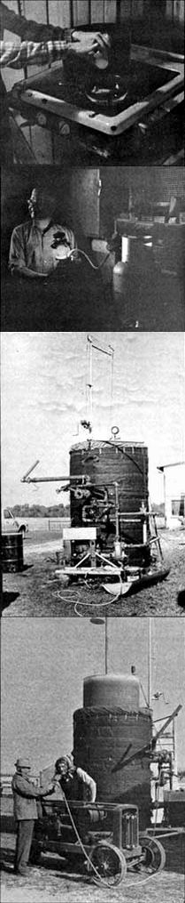
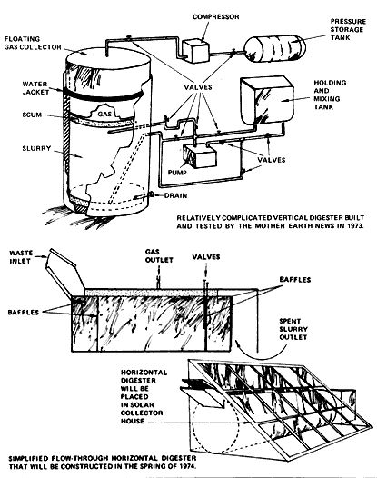

Thanks to a brief paragraph which appeared in Mechanix Illustrated, I first became aware that a burnable fuel could be produced from organic waste in the mid-1950's. The mini-article lightly mentioned that a few British sanitation engineers were powering their cars with some of the sewage gas generated by the garbage disposal plant at which they worked.
That skimpy but tantalizing report intrigued me and I squirreled it away in the files I've maintained since I was eight or ten years old. A few years later, I added a one-page article clipped from the May 1963 Farm Journal.
The second piece described a methane generator built by Dr. George W. Groth, Jr., on his 1,000-head pig ranch in San Diego County, California. According to the Farm Journal article, Groth used a 6,000-gallon composting unit to produce gas with which he fueled a war-surplus electrical generator. The generator, in turn, furnished electricity for the farm ... but just how much, the report didn't say.
Over the years that followed, I collected other scraps of information about methane production. Stewart Brand's Whole Earth Catalog and WEC Supplement furnished some exceptionally valuable leads during 1969 ... and a big packet of material from Clarence E. (Fireball) Burr in early 1970 really convinced me-once and for all-of the practicality of anaerobic bacteria and their useful by-products.
Burr, who served for years as Chairman of Health in the People's Lobby of Los Angeles, teamed up in the early 1930's with consulting engineer Russell P. Howard. The two men then spent the next 37 years fighting-together and singly-to introduce the merits of anaerobic waste digestion to municipal officials. It was a long, discouraging battle. So long and so discouraging that, when Clarence happened to see a copy of THE Mother Earth News in 1970, he more or less turned to the publication as a last resort.
Our fledgling magazine (we'd only published two issues when we received Burr's material) immediately printed Clarence's article ... accompanied by a reprint of the 1963 Farm Journal piece and instructions for fabricating anaerobic latrines and digesters that another contributor seems to have "lifted" from the World Health Organization's book, Composting.
That opened the floodgate. MOTHER readers in the United States and Canada began digging up stray facts about methane production in fuel-poor sections of the planet and we started prodding our steadily expanding network of correspondents for still more information. Eventually, Ram Bux Singh (one of the world's foremost authorities on the subject) heard of this activity and-while visiting the U.S. during the summer of 1972-offered to oversee the fabrication of a "bio-gas plant" for the periodical.
Naturally, we were delighted to have the Director of India's famous Gobar Gas Research Station direct the construction of our experimental composting unit. We were somewhat less than delighted, however, when we later learned that a welder-imported from another state especially to help Singh put our demonstration bio-gas plant together-wasn't nearly as good a welder as he thought.
THE Mother Earth News' original digester, in short, leaked from every seam of its main tank and water jacket ... and was absolutely worthless. We had hoped to have our waste disposal plant in operation a week after Singh returned to India so, of course, this was a major disappointment.
Disappointment soon turned to determination, however, and-in the spring of 1973-the maimed methane maker was transported to the Indiana farm owned by my parents, Richard and Esther Shuttleworth.
Now Dick Shuttleworth is one of those talented men who can make anything-mechanical, electrical, organic, whatever-perform as expected. Within weeks (and working only in his spare time), he had completely redesigned and rebuilt the digester. By mid-July, we were ready to load the composting unit with manure from the cattle on my parents' farm.
At that point, L. John Fry was brought into the act. I had first learned of his work (during the summer of 1972) when I had read a two-part article about Fry in Survival Times, an environmental monthly published in Santa Barbara, California. The piece was the inspiration for the L. John Fry interview in MOTHER NO. 23 (in which he outlined his digestion experiments during the past 20 years) ... and our coverage of his methane experiments, in turn, had given me a great deal of respect for Fry's knowledge of the subject at hand.
Accordingly, I telephoned Mr. Fry, explained what we were doing and asked for any help he might extend. He was quite cordial, took a keen interest in our digester and gave me many valuable pointers ... most of which boiled down to "mix your cow manure with enough water to form a slurry with the consistency of cream, put it into your airtight tank and be patient until gas production begins". That may not sound like a lot of help, but it was just the words we needed to hear ... and we forged ahead.
I should pause here to admit that-even though I had known about anaerobic production of methane for approximately 17 years at that point and even though we had been advised by both Ram Bux Singh and L. John Fry and even though we had invested a great deal (for us) of time and money in our digester-none of us at MOTHER, in mid-July of 1973, were at all sure the danged idea would really, really work.
But what the heck. We had spent the money and time to put our composting unit together, and it certainly wasn't going to do anything if we left it empty ... so what did we have to lose by filling it with cow manure and water?
The heart of our digester is a steel tank (bought at scrap price from a junkyard) approximately 48 inches in diameter and nine feet tall. It's surrounded by a larger water jacket, and a third tank (with a diameter halfway between the first two) is turned upside down over the digestion container to act as a gas collecting "bonnet".
Attached to the outside of the water jacket on one side (usually referred to as the "back") is a used 275-gallon fuel oil tank. This container has its top cut out and is used as a holding and mixing tank for the slurry that is pumped into the meth ane generator's main chamber. On the other side of the water jacket (the "front") is a Gorman-Rupp manure and trash pump driven by a 12-hp engine taken off an old John Deere combine.
A maze of two-inch pipes and valves interconnects all these components so that we can force slurry into or out of the holding tank ... into or out of the top, bottom or middle of the main digestion chamber ... or completely out of the composter.
Our cow-manure-and-water slurry began producing gas a week after we half-filled THE Mother Earth News' digester with waste. This was unusually fast action (we had added no special cultures of bacteria or other starters to the slurry) and, as might be expected, we were quite excited by the activity. In the best "safety first" tradition, we bled off the first two bonnetfuls of gas (since the initial flow of methane could mix with air already inside the digestion chamber to form a potentially explosive combination). Dad then ran an ordinary garden hose from a petcock on the bonnet to an old two-burner gas stove, opened the valves, struck a match ... and began frying eggs over a very hot flame.
From then until mid-October, the folks fried a lot of hen fruit for the dozens of visitors who trooped out to view the wonders of "homemade natural gas". Somebody loaned dad a propane lamp and, after drilling out its orifice (methane is not as "hot" a fuel as propane, and more of it is required to do any given job), he began running the light on "cow power" that he had pumped into a pressure tank with the farm's air compressor.
As a matter of fact, my father spent most of the fall scrounging up all the old propane, bottled gas and other pressure tanks he could find. On its initial loading, you see, our generator produced a steady 41 cubic feet of high-quality methane a day for almost three months. Since he didn't really have any use for the fuel (other than demonstrating to the curious that it would burn) and since he was loath to let it go to waste, dad figured he ought to store the gas in some way.
So he did ... by pumping the methane into pressure tanks with his air compressor. A standard (approximately four feet long) propane bottle would hold four days' production of gas when the methane was compressed to about 200 pounds per square inch. Which meant, of course, that dad needed another tank every four days. Pretty soon, it seemed, he had the containers sitting all over the farm.
Which makes this as good a place as any, I suppose, to clarify my above statement about "a steady 41 cubic feet of high-quality methane a day".
Actually, our generator produced more (sometimes much more) gas than that on a really warm day. When its collection bonnet had been pushed up 41 cubic feet worth, however, the collector either had to be emptied ... or all the additional methane that was created merely bubbled out under the upside-down drum's lower edge. Since dad usually emptied the bonnet just once a day, it's obvious that we lost a lot of fuel we could have saved.
On the other hand, it's only fair to admit that gas production from THE Mother Earth News' digester ground to a complete halt one fine morning in late October. "What happened?" we wondered."Has all the manure been digested? Is it getting too cold for the anaerobic bacteria? Did enough scum form on top of the slurry to shut down the bacterial action?"
It didn't take long to figure out the answer. Dad had mounted a small hand-cranked winch on top of the bio-gas plant and we used it to raise the bonnet so we could look down inside the main digestion tank. Sure enough, a tight cap of undigested material (mostly straw that had been mixed in with our slurry's manure) covered the top of the waste inside the composter. The cap was about 16 inches thick and dense enough (apparently) to shut down the digester.
So we removed it. Just stood up on top of the rig and reached down inside with a rake and a hoe, dug up the gummy scum, dumped it into the manure scoop mounted on the front of a tractor and hauled it away. Two days later, the generator was back in full production.
One further qualification about the "initial loading" of our digester and its "steady" production of methane: Singh and Fry had told us that we'd probably get a superior flow and quality of the gas by composting pure manure (no straw or other bedding) collected from the concrete floor of our barn (where we'd be sure to get every bit of urine along with the solids).
OK. The only trouble with that idea was the fact that the folks' cattle could freely ramble from the barn to the pasture and back ... and they didn't stay inside much during the summer. There wasn't a whole lot of manure to collect off that concrete floor, in other words ... just enough to fill our digester's main tank about half full.
That half charge was all we had with which to start our composter. I don't think anyone can say we were cheating, then, when dad added a scoop (tractor scoop) or two of manure to the slurry once or twice during the late summer ... for the TV cameramen and newspaper photographers who came by and asked for some "action". At the time (late October) when we cleaned the scum from the digester, we also drained a couple of barrels of slurry from the plant and replaced it with fresh manure.
That was an interesting experiment, by the way, and you should know about it: We had heard that the spent slurry taken from a digester would be rich in nitrogen . . . but we weren't prepared for what happened when we dumped the composted waste on a bare patch of ground. The digested slurry actually soaked into the soil faster than plain water! The earth was that "hungry" for it.Furthermore, the particular spot of land in question was bare because dad had scraped off all its topsoil approximately 18 or 20 years before. Nothing had grown there since. But-now get this!-grass did start to grow on that same barren area two weeks after we doused it with the composted manure. A miraculous cure indeed ... and it impressed the heck out of us.
Some MOTHER people who had been laboring in Ohio and our new headquarters in the mountains of North Carolina were also impressed-during our late October visit to Indiana-by another little demonstration staged by my father. Dad has a homemade portable welder which is powered by a 1948 6-cylinder Chevrolet automobile engine. Not only did he run the Chevy powerplant on methane for us ... but he did it by simply sticking his trusty garden hose (still fastened to the petcock on our generator's gas collector) directly into the air intake on the engine's carburetor. He had to regulate the mix of methane-to-air with his hand when he did this. . . but, dang it anyhow, there was absolutely no question that the gasoline engine would operate on methane with no real modifications whatsoever. We were excited!
That excitement next turned to utter ecstasy when dad removed a small plug on the side of the Chevy's carburetor, just below the butterfly valve. By holding the end of the garden hose over this hole so that it fed methane to the engine downstream of the butterfly, the powerplant both ran on the "homemade gasoline" and was throttleable.
This left just one small bug in the ointment: Although the engine would run-and run well-when "hand fed" methane through a garden hose (at a pressure of 1-3/4 inches on a water gauge) ... it wouldn't start on the vapor. Rather, we had to fire the powerplant up on gasoline, turn the regular fuel line off ... and then "catch" the engine on methane as it starved out.
Was this because the methane, in some way, wasn't as "good" as the gasoline? Not at all. It was just because we were trying to meter one fuel through equipment designed to handle another. We now have a natural gas carburetor (it was, considered "surplus" by an overstocked LP dealer and cost us only $12.00) on the engine and the powerplant currently both starts and runs quite well on nothing but "cow power".
We've put our homemade natural gas to other uses too. Besides regularly fueling a gas stove, propane lamp and automobile engine with the vapor, we've run a gas refrigerator, natural gas light, space heater and water heater on the methane. You don't have to take our word for it either: we held a news conference on Friday, November 2, 1973 and did all these things at random and upon request for a crowd of over 250 TV reporters, magazine editors, wire service stringers, United Auto Workers representatives, businessmen, government officials and interested farmers. Every demonstration worked exactly as we stated it would ... and they've kept right on working for the steady stream of photographers, writers and other interested individuals whove visited our Indiana farm since the press conference.
As a matter of fact (and we're not really complaining, mind you!) our methane generator and the equipment it fuels have operated so well that they've become too popular. We have a gas chromatograph and some other test apparatus down here in North Carolina, you see, and we expected to move all our methane experiments south in mid-November so we could analyze the vapor we produce, test its Btu value, etc.
But first an independent TV news service, and then CBS wanted to film the composter while it was still on the farm in Indiana. Next, some manufacturers asked if they could see the unit operate up north. Somewhere along the line Parade and National Geographic and Money put in similar requests. As did several other publications and writers and photographers and commercial interests.
So at this writing (January 1974), our experimental methane maker is still parked in Hoosierland. This has, admittedly, slowed our research work somewhat ... but not a lot. Our original generator was mainly put into operation just to prove once and for all (to ourselves, if to no one else) that a homestead-size methane production unit will really, really work. We now know that it will. We know some other things too:
[1] Our first methane maker has shown us that we don't much care for a digester of vertical design. Such bio-gas plants (as they're called in India) "want" to become plugged with scum and otherwise cause themselves trouble.
[2] It's ridiculous to spend a couple of thousand dollars for pipe, valves, a pump and engine when all you want to do is allow waste to flow through an airtight tank. We now believe that gravity can handle that job for us.
[3] It's almost equally as foolish to use electricity or another "outside" fuel (or even methane itself) to heat a digester to its optimum operating temperature of 95° F. The sun, we feel, should be allowed to maintain that temperature ... virtually for free.
[4] No one design is going to be "best" for every size digester that everyone is going to want to build and every combination of material that everyone is going to want to process.
[5] The nitrogen-rich fertilizer produced by a composter is just as valuable as the methane it makes ... and not everyone is going to get exactly the proportion of these two end products that he wants from the waste he has to dispose of.
[6] Methane is a great fuel ... for stationary applications such as heating a house, drying grain, cooking, running a gas refrigerator, electrical generator, etc. It's a very light gas, though, and not nearly as attractive as some people think for over-the-road use in internalcombustion-engine-powered vehicles.
[7] Perhaps most important of all, people who are accustomed only to the "free ride" we've all been getting from abundant and inexpensive fossil fuels are going to have to scale down their expectations when they begin (as we all will have to, sooner or later) plugging into anaerobic digestion and other renewable energy sources.
So where does that leave MOTHER and her methane experiments at this time?
Well, we're forging ahead with several designs for horizontal composting units that have absolutely no pipes, valves, pumps or engines. Well just (in theory, at least) pour the slop in one end of these digesters and gravity will do the rest.
These waste disposal tanks will be housed in inexpensive solar energy collectors or buried underground (and warmed indirectly by the sun). If we find that gravity doesn't quite keep them operating the way we think they should, well add a simple little windmill-geared down 10,000-to-1 if necessary-to stir the slurry whenever there's enough breeze to turn the fan.
We're building models (55-gallon drums welded end to end make ideal experimental units with which to test our horizontal digester ideas) of these composters now and think we're onto something. We hate to get anyone else excited about the project, however, until we at least start producing methane and processed fertilizer with one of the new bio-gas plants.
Remember, it's not enough just to put together a digester that works: To be really practical, our new designs have to dispose of waste and produce methane and plant food at a price that is competitive with currently available effluent treatment facilities and fuel and fertilizer sold on the open market.
Once again, then-as so often happens in our society-dollars and cents may well make the final decision on whether or not our "improved" methane generators are considered by the general populace to be an improvement after all. As recently as the summer of 1973 (before the so-called "energy crisis" fell out of the sky and dumbfounded most of them), few ordinary citizens of the United States and Canada paid much attention to our experiments. Now, however, every rise in gasoline prices, every hike in the cost of propane and fuel oil, every new government regulation and plea for voluntarily reduced fossil fuel consumption and every fresh statement about even tighter future energy supplies seems to tip the scales a little further in our direction.
Time and the tide, we'd say, are now most certainly running in favor of renewable energy sources of all kinds ... including the lowly anaerobic bacteria and the methane they produce. MOTHER's new generation of digesters may well be riding the wave of the future.
|
 |
 |
|